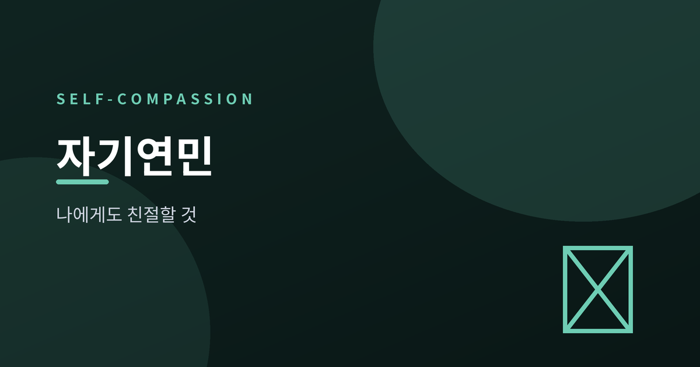
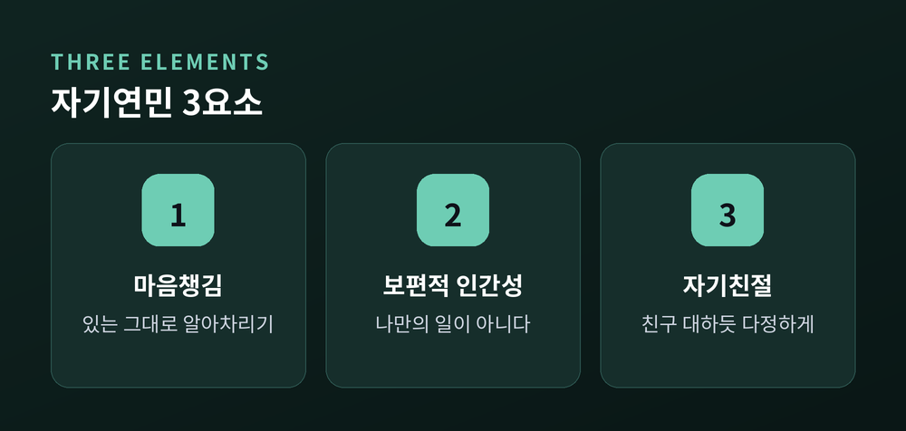
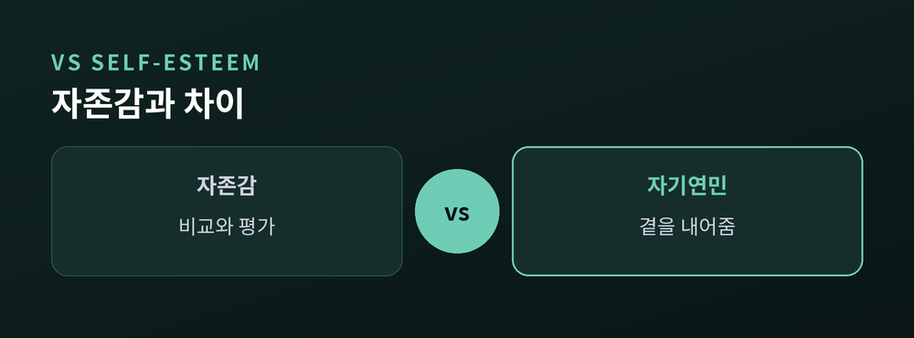
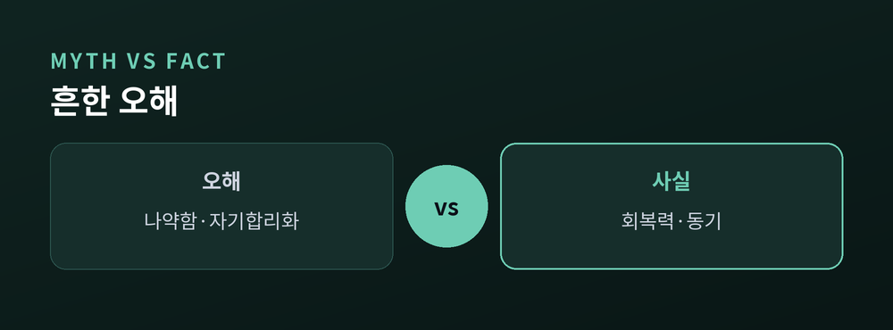
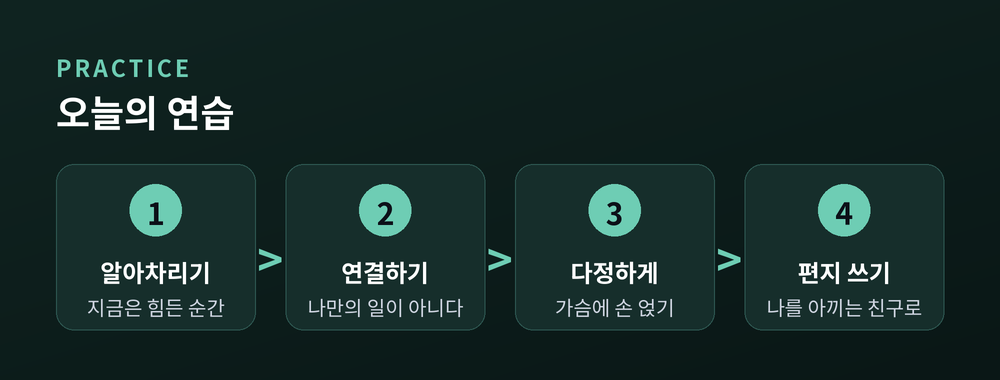

실패한 나에게도 친절할 수 있을까
이번 글에서는 자기연민(self-compassion)을 정리해 보겠습니다. 실패한 순간 우리는 유독 자신에게 가혹해집니다. 그 익숙한 습관을 조금 다르게 바라보려 합니다.

자기연민은 심리학자 크리스틴 네프가 정립한 개념입니다.
실패와 부족함을 마주할 때, 자신을 몰아세우는 대신 가까운 친구를 대하듯 다정하게 대하는 태도를 말합니다.
방법은 의외로 단순합니다. "친한 친구가 같은 실패로 괴로워한다면 뭐라고 말해 줄까." 그 말투를 자신에게도 건네보는 것입니다.
네프는 자기연민을 세 요소로 설명합니다. 힘든 감정을 억누르지 않고 알아차리는 마음챙김, 이 실패가 나만의 것이 아님을 아는 보편적 인간성, 그리고 자신을 이해하고 아끼는 자기친절입니다.
세 가지는 따로 놀지 않습니다. 아파도, 나만의 문제가 아님을 알고, 그래서 자신에게 다정해지는 하나의 흐름입니다.
여기서 놓치기 쉬운 지점이 있습니다. 자기연민은 고통을 없애는 일이 아니라는 것입니다. 아픔은 그대로 두되, 그 아픔을 겪는 자신을 어떻게 대할지를 바꾸는 일입니다.

자기연민은 자존감과 자주 혼동됩니다. 그러나 결이 다릅니다.
자존감은 '내가 얼마나 괜찮은 사람인가'를 평가하는 마음입니다. 대개 타인과의 비교나 성취, 외모에 기댑니다. 잘나갈 때는 높지만, 실패하면 함께 무너지기 쉽습니다.
자기연민은 평가가 아닙니다. 잘났는지 못났는지를 따지지 않고, 힘들 때 자신에게 곁을 내어주는 태도입니다.
네프의 대규모 조사에서 자기연민은 자존감보다 더 안정적인 자기가치감과 이어졌고, 성공이나 외모에 덜 흔들렸습니다. 자존감과 비슷한 이점을 주되, 남과 비교하며 자신을 방어하는 부작용은 적었습니다. 실제로 자존감은 사회적 비교나 분노와 함께 가는 경향이 있었지만, 자기연민은 그 반대였습니다.
예전에는 스스로를 더 높이 평가하려 애썼습니다. 지금은 평가를 잠시 내려놓는 편이 낫다고 생각합니다.

자기연민을 '자기 봐주기'로 오해하는 분이 많습니다.
그러나 자기연민은 신세한탄이 아닙니다. 오히려 "내 처지가 제일 딱하다"는 자기동정의 해독제에 가깝습니다.
나약함도 아닙니다. 연구에 따르면 자기연민이 높은 사람이 역경을 더 잘 이겨냈습니다.
동기를 떨어뜨리지도 않습니다. 한 실험에서 자기연민을 품은 사람들은 잘못을 만회하려는 의지가 더 컸고, 실패 뒤 어려운 시험 공부에 더 오래 매달렸습니다. 자신을 아끼는 마음은 오히려 약점을 고칠 수 있다는 믿음으로 이어졌습니다.
자기비판은 익숙할 뿐, 우리를 앞으로 나아가게 하는 최선의 방법은 아닙니다. 실패를 벌하는 대신 발판으로 삼게 하는 쪽이 자기연민입니다.

거창할 필요는 없습니다. 짧은 실습부터 권합니다.
첫째, 자기연민 휴식입니다. 힘든 순간 스스로에게 세 문장을 건넵니다. "지금은 힘든 순간이야." "힘든 건 나만 겪는 일이 아니야." 그리고 가슴에 손을 얹고 "내가 나에게 조금 더 다정해지기를."
둘째, 자기연민 편지입니다. 부족하게 느껴지는 점 하나를 떠올리고, 나를 아끼는 지혜로운 친구가 되어 나에게 편지를 씁니다. 다 쓴 뒤 잠시 두었다가, 정말 그 친구가 보낸 편지처럼 다시 읽어봅니다.
다만 자기비판과 무력감, 우울과 불안이 오래 이어지거나 심해진다면, 혼자 애쓰기보다 상담센터나 정신건강의학과 등 전문가의 도움을 받으시길 권합니다.

끝으로 한 마디만 더 드리겠습니다.
자기연민은 실패를 지우는 기술이 아닙니다. 실패한 나를 버리지 않는 태도입니다.
실패한 나에게도 친절할 수 있느냐고 물으신다면, 연습으로 조금씩 가능해진다고 답하겠습니다.
참고 소스